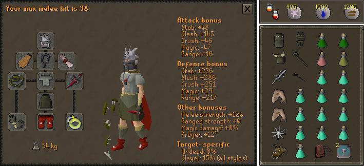
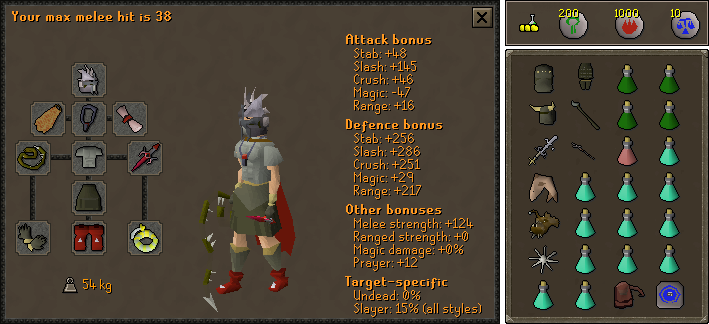

Potion Sharing Attacker

Arclight > Abyssal Tentacle > Abyssal Whip > Abyssal Bludgeon > Godsword
Dragon Warhammer > Toxic Staff of the Dead > SGS = Crystal Halberd > BGS > Abyssal Dagger = Dragon Halberd > AGS > Dragon Dagger
Toxic Staff of the Dead > Staff of the Dead > Zamorakian Hasta > Abyssal Whip* > Abyssal Dagger
Dragon Defender > Rune Defender > Toktz-ket-xil
None
Slayer** > Serpentine > Warrior > Fighter > Neitiznot > Berserker > Verac's
Bandos Chestplate > Fighter Torso > Verac's > Other barrows
Bandos Tassets > Verac's > Other Barrows
Primordial > Dragon
Barrows > Dragon > Rune > Adamant > Regen Bracelet > Combat Bracelet
Fire > Ardougne 2+ = Skillcape (t) > God Cloak > Obsidian > Legend's
Torture > Fury > Glory
Warrior (i) = Berserker (i) > Ring of the Gods (i) > Warrior = Berserker > Explorer's > Life
Unholy blessing > Other blessings
Notes
- The tank will bring super combat potions to give you.
- The main hand switch is used to not degrade your primary weapon on minions and kill count.
- *If using an Unholy Blessing, the Abyssal Whip is the best for a main hand switch.
- **Use on a Greater Demon or K'ril Tsutsaroth slayer task.
Attacker - Alcher

Notes
- Same as Potion Sharing Attacker, but with more boosting potions
Tank - Melee Defense (Pray Magic)

Arclight > Abyssal Tentacle > Abyssal Whip
Dragon Warhammer > Toxic Staff of the Dead > SGS > Crystal Halberd > BGS > Abyssal Dagger = Dragon Halberd > AGS > Dragon Dagger
Toxic Staff of the Dead > Staff of the Dead > Zamorakian Hasta > Abyssal Whip* > Abyssal Dagger
Elysian > Dragonfire Shield > Crystal Shield > Blessed Spirit Shield = Arcane = Spectral > Dragon Sq
Dragon defender
Slayer** > Serpentine > Verac's > Guthan's > Torag's = Dharok's > Neitiznot
Bandos Chestplate = Guthan's > Dharok's = Torags > Verac's
Bandos Tassets = Verac's > Dharok's = Torag's > Guthan's
Primordial > Dragon > Bandos
Barrows > Dragon > Rune > Adamant > Regen Bracelet > Combat Bracelet
Fire > Ardougne 2+ = Skillcape (t) > God Cloak > Obsidian > Legend's
Fury > Torture > Glory
Warrior (i) > Berserker (i) > Ring of Suffering (i) > Warrior > Berserker > Ring of the Gods (i) > Explorer's > Life
Unholy blessing > Other blessings
Notes
- The main hand switch is used to not degrade your primary weapon on minions and kill count.
- *If using an Unholy Blessing, the Abyssal Whip is the best for a main hand switch.
- **Use on a Greater Demon or K'ril Tsutsaroth slayer task.
Tank - Magic Defense (Pray Melee)

Arclight > Abyssal Tentacle > Abyssal Whip
Dragon Warhammer > Toxic Staff of the Dead > SGS > Crystal Halberd > BGS > Abyssal Dagger = Dragon Halberd > AGS > Dragon Dagger
Toxic Staff of the Dead > Staff of the Dead > Zamorakian Hasta > Abyssal Whip* > Abyssal Dagger
Elysian > Spectral > Dragonfire Shield > Arcane > Crystal Shield > Blessed Spirit Shield > Dragon Sq
Dragon defender
Slayer** > Serpentine > Verac's > Guthan's > Torag's = Dharok's > Neitiznot
Karil's > Blessed d'hide
Karil's > Blessed d'hide
Primordial > Dragon > Bandos
Barrows > Dragon > Rune > Adamant > Regen Bracelet > Combat Bracelet
Fire > Ardougne 2+ = Skillcape (t) > God Cloak > Obsidian > Legend's
Fury > Torture > Glory
Warrior (i) > Berserker (i) > Ring of Suffering (i) > Warrior > Berserker > Ring of the Gods (i) > Explorer's > Life
Unholy blessing > Other blessings
Notes
- The main hand switch is used to not degrade your primary weapon on minions and kill count.
- *If using an Unholy Blessing, the Abyssal Whip is the best for a main hand switch.
- **Use on a Greater Demon or K'ril Tsutsaroth slayer task.